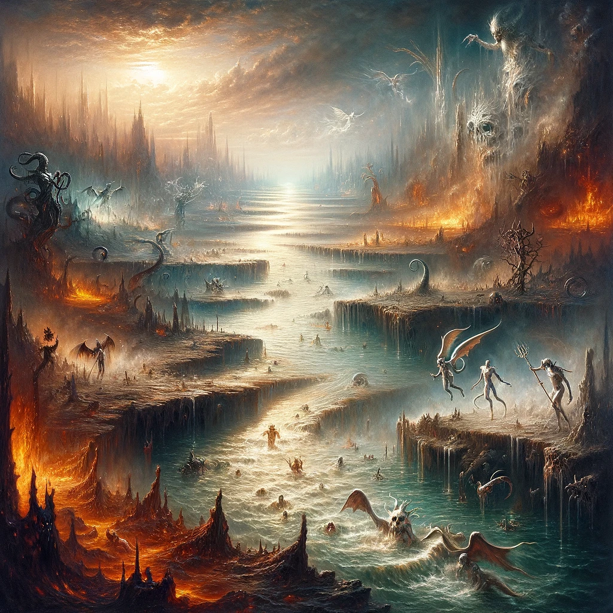
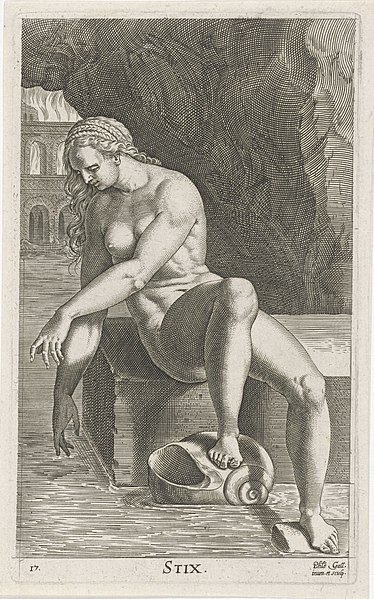
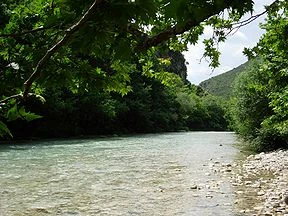

STYX

Introduction
The River Styx (Ancient Greek: Στύξ; lit. "Shuddering") is a location in Greek mythology. Located in the Underworld, it is a river that serves as a barrier separating the world of the living from the world of the dead. It is one of five underworld rivers; the others being the Phlegethon (or Pyriphlegethon), Lethe, Cocytus and Acheron.
Styx is a name that evokes both awe and dread. Derived from the Greek word “stygós,” it means “hatred” or “dread.” In Roman mythology, she retains her name, a testament to her universal significance. Various epithets and other names aren’t as common for Styx, perhaps due to the singular role she plays in the myths.
In the grand scheme of things, Styx is a unique figure. Unlike other deities who have Roman counterparts with different names (Zeus and Jupiter, for instance), Styx remains Styx. This constancy perhaps reflects her immutable nature as the ultimate boundary and oath-keeper.

Born to the Titans Oceanus and Tethys, Styx was part of an illustrious family. She was one of the many Oceanids, sea Nymphs, Guardians of Nature of great beauty and power. Yet, even among her numerous siblings, Dione for one, she stood out, destined for a unique path.
During the Titanomachy, between the Titans and Olympians, she was the first to side with Zeus. Her allegiance wasn’t just symbolic; it was a game-changer, setting the stage for the Olympians’ victory
In Greek mythology, Styx isn’t just a goddess; she’s also a Daemone, a personification of the river that serves as the boundary to the Underworld. Her dual nature adds layers of complexity to her character, making her more than just a static figure in mythological narratives.
Styx is often depicted as a dark, shadowy figure, sometimes holding a jar from which the river flows. Her appearance is as enigmatic as her nature. She’s often shown in dark robes, a nod to her dominion over the dread-filled river. Symbols associated with her include the river itself and sometimes a jar or urn, signifying the containment of her waters.
Literary
In ancient mythology, Styx was originally a goddess, the daughter of the Titan Oceanus and Tethys – or, according to other versions, Nyx and Erebus. She became the personification of the flow of the underworld itself. She was the first to side with Zeus in the Titanomachy, and as a reward, Zeus entrusted her with the most sacred power: any divine oath taken by Styx is unbreakable.
In Plato's dialogues, the Styx is spoken of as the most terrible and darkest of the five rivers of the underworld (alongside Acheron, Lethe, Cocytus and Phlegethon). Its water is not cleansing – it is deadly. According to some authors, it can even eat away at stone and destroy armor.
In order to cross the River Styx and reach Hades, a dead person must pay a fee to the ferryman, Charon. If the correct fee is paid, Charon will take the dead across. If the dead cannot afford the fee, however, they will be forced to wander the banks of the River Styx as Wraiths for eternity (or one hundred years, depending on the recount).
The greatest oath that a god can make is to swear on the river Styx. When a god swears on the River Styx, they're bound for all eternity to keep that promise or else be paralyzed for a year and a day, and even then, risk being ostracized from Mount Olympus and their duties and immortality being removed and given to another god.
Bodies dipped into the river will receive the gift of immortality; one famous example is when Thetis, mother of the demigod Achilles, dipped him into the river by his heel. This ensured he could only be harmed at his heel, a fact exploited by Apollo and later giving rise to the phrase "Achilles' heel".
Water from this Styx was said to be poisonous and able to dissolve most substances. The first-century natural philosopher Pliny, wrote that drinking its water caused immediate death, and that the hoof of a female mule was the only material not "rotted" by its water. According to Plutarch the poisonous water could only be held by an ass's hoof, since all other vessels would "be eaten through by it, owing to its coldness and pungency." While according to Pausanias, the only vessel that could hold the Styx's water (poisonous to both men and animals) was a horse's hoof. There were ancient suspicions that Alexander the Great's death was caused by being poisoned with the water of this Styx.
The river was a sacred place to both gods and men. It circles the Underworld nine times, eventually converging on a great marsh at the center of the Underworld with the rivers Phlegethon, Acheron, and Cocytus (though there is a fourth river: Lethe). The river is very polluted, being filled with pretty much anything you could imagine: broken toys, ripped up diplomas, etc. – the scrapheap of human miseries. The river is filled with lost hopes and dreams, as well as wishes that never came true.
Those who touch, drink, or are immersed in the Styx forget their entire past life, including spells and all alignments save their original one. A saving throw vs. spell is applicabl. Those who are immersed in the river have the standard chance of drowning in the swift flow. There is also a 50% chance of being dragged into another plane before reaching the shore
Location
The Acheron (meaning "Stream of Woe") is a river located in the Epirus region of northwest Greece. It flows into the Ionian Sea in Ammoudia. It was thought by ancient Greeks to have been a branch to the underworld river Styx.

Styx, along with the underworld rivers Cocytus and Acheron, were associated with waterways in the upper world. For example, according to Homer, the river Titaressus, a tributary of the river Peneius in Thessaly, was a branch of the Styx. However Styx has been most commonly associated with an Arcadian stream and waterfall (the Mavronéri) that runs through a ravine on the North face of mount Chelmos and flows into the Krathis river. The fifth-century BC historian Herodotus, locates this stream—calling it "the water of Styx"—as being near Nonacris a town (in what was then ancient Arcadia and now modern Achaea) not far from Pheneus, and says that the Spartan king Cleomenes, would make men take oaths swearing by its water. Herodotus describes it as "a stream of small appearance, dropping from a cliff into a pool; a wall of stones runs round the pool". Pausanias reports visiting the "water of the Styx" near Nonacris (which at the time of his visit, in the second century AD, was already a partially-buried ruins),
According to Aelian, Demeter caused the water of this Arcadian Styx "to well up in the neighbourhood of Pheneus". An ancient legend apparently also connected Demeter with this Styx. According to Photius, a certain Ptolemy Hephaestion (probably referring to Ptolemy Chennus) knew of a story, "concerning the water of the Styx in Arcadia", which told how an angry Demeter had turned the Styx's water black. According to James George Frazer, this "fable" provided an explanation for the fact that, from a distance, the waterfall appears black.
The River Styx is actually the underground segment of Cave Creek as it flows through Oregon Caves National Monument. This designation is unique within the National Wild and Scenic Rivers System as it is the first—and only—underground river in the National System. The River Styx is a perennial stream that flows continuously all year round. Two hundred and twenty feet underground, two small River Styx tributaries on the floor of the large Ghost Room join to form what is called the Ghost Styx. The Ghost Styx seems to disappear back into the bedrock and eventually joins the main River Styx deeper in the cave
There is a river that is the boundary between heaven and hell. (This is according to Greek mythology.) The Styx River is one of five, but it is the main one. Charon, the ferryman, controls who can cross over. The passage requires a payment … a coin in the mouth, or on the eyes. Otherwise, Charon would leave your soul would stay on the shore and drift for a century.
Research
mythology Description
Technically speaking, the River Styx isn't an underworld realm – it is a liminal space that touches on all known underworld realms. Manifesting as a great flowing river whose far shore is dimly visible through the mist, the River Styx is cast eternally in twilight. Its near shore is thick clay-like mud a deep black color, with patches of stones and the occasional bone interrupting its smoothness. The shore descends down to the water's edge where a panoply of tall grasses occasionally ripple and whisper in a wind that living flesh never feels.
The calm surface of the black waters are occasionally broken by the shade of one of the dead, surfacing to try and clutch at a life it has already lost. These spirits are often borne away by a tide that affects only them.